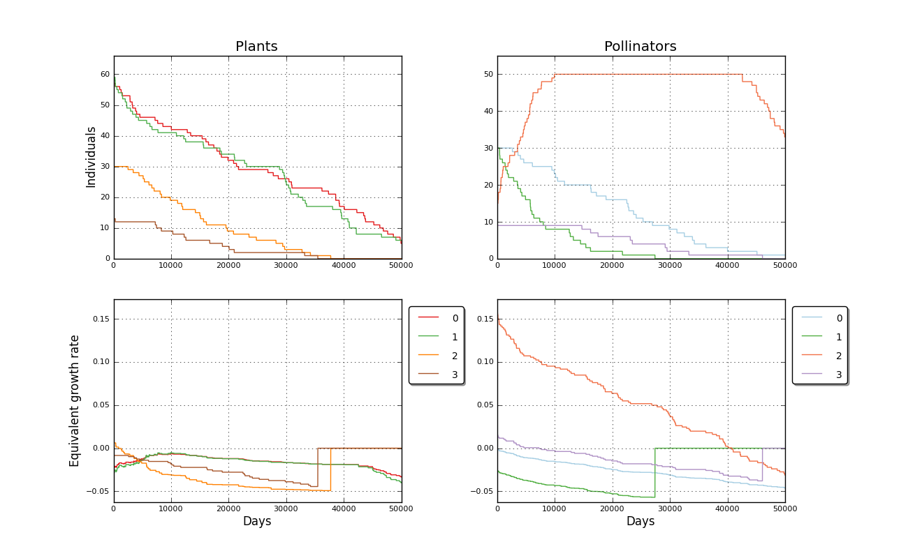

Binomial simulated mutualistic interaction. Input file: 4_03K_insostenible   days: 50000<br>============================================================================<br>User Comment: Red inviable
<br>Mutualist interactions enabled<br><br>Plants matrix: <a href='../input/4_03K_insostenible_a.txt' target=_BLANK>4_03K_insostenible_a.txt<a><br>Pollinators matrix: <a href='../input/4_03K_insostenible_b.txt' target=_BLANK>4_03K_insostenible_b.txt<a><br>Plant species: 4<br>Plant initial populations [60, 60, 30, 15]<br>Pollinator species: 4<br>Pollinator initial populations [30, 30, 15, 9]<br>Pollinator species 1 extinction in day 27376<br>Plant species 3 extinction in day 35479<br>Plant species 2 extinction in day 37722<br>Pollinator species 3 extinction in day 46039<br>Elapsed time 18.12 s<br><br>Created 2012-07-08 17:13:52.109000<br><br><br>Populations evolution picture<br><table border=0><tr><td></td></tr></table><P>